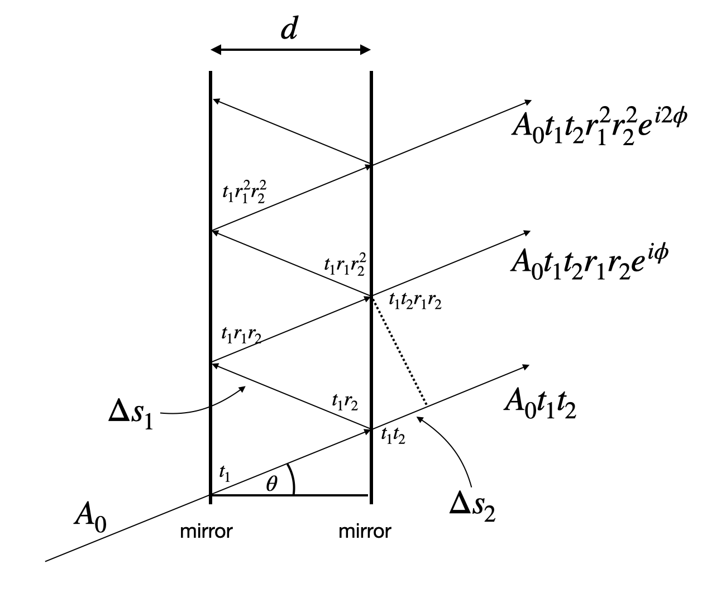
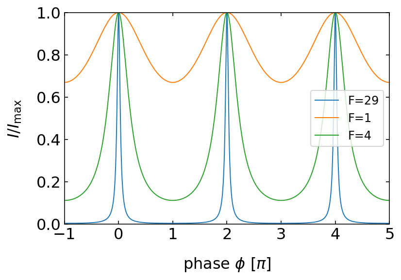
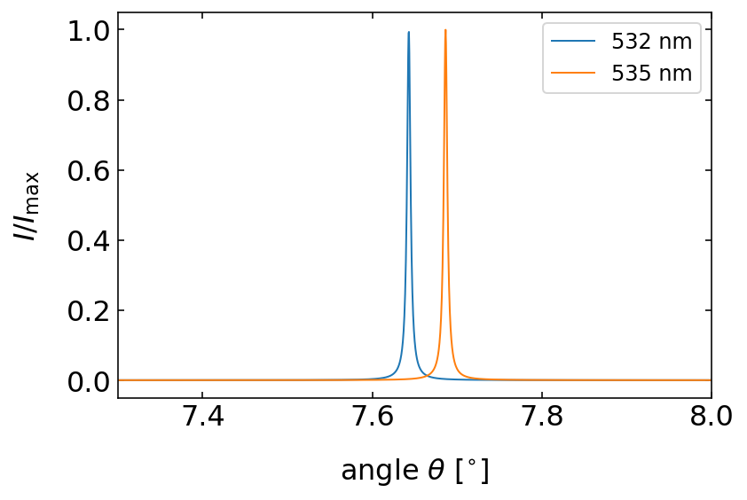
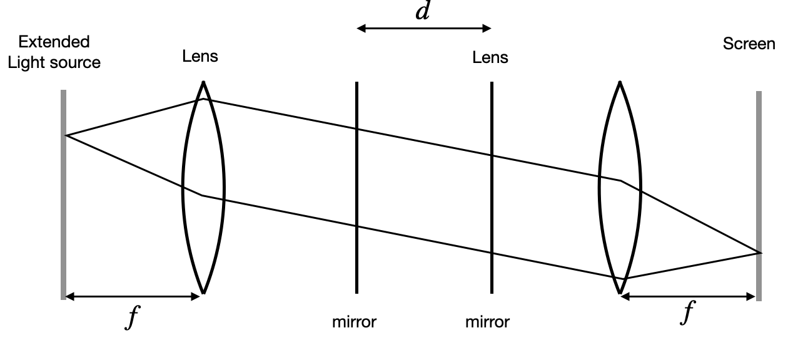
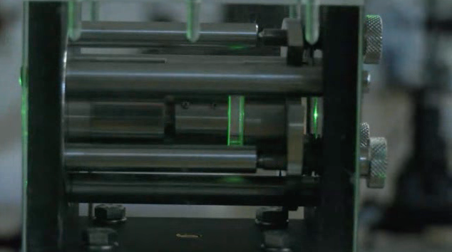
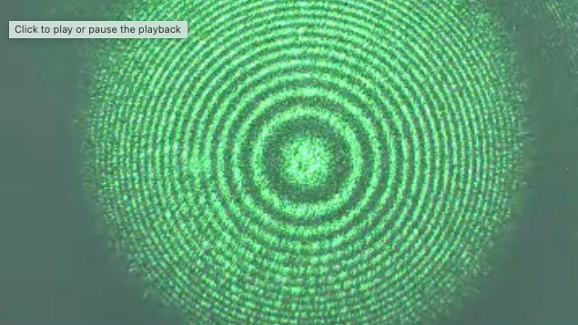
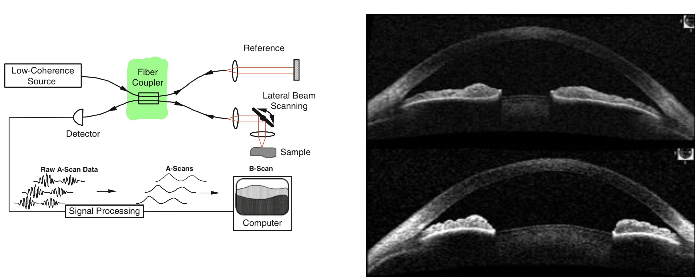

18 Fabry Perot Interferometer
The Fabry-Perot interferometer demonstrates multiple-wave interference with decreasing amplitude. It consists of two parallel mirrors separated by a distance \(d\), creating multiple reflections of incident light.

When light with amplitude \(A_0\) enters the interferometer, it undergoes a series of transmissions and reflections. The first transmitted wave has amplitude:
\[ U_1=A_0t_1 t_2 \]
where \(t_1\) and \(t_2\) are the transmission coefficients of the first and second mirrors. The second transmitted wave includes reflections from both mirrors (\(r_1\) and \(r_2\)) and a phase shift \(\Delta\phi\):
\[ U_2=A_0t_1 t_2 r_1 r_2 e^{i\phi}=U_1 r_1 r_2 e^{i\Delta\phi} \]
This follows our earlier treatment of multiple-wave interference with decreasing amplitude, where \(\sqrt{I_0}=A_0 t_1 t_2\) and \(r=r_1r_2\). The phase shift between successive reflections is:
\[ \phi=\frac{2\pi}{\lambda} \Delta s = \frac{2\pi}{\lambda} 2d\cos(\theta) \]
where \(\Delta s=2d\cos(\theta)\) represents the path difference between adjacent rays.
The resulting intensity distribution is:
\[ I=|U|^2=\frac{I_{0}}{|1-re^{i\phi}|^2}=\frac{I_0}{(1-r)^2+4r\sin^2\left (\frac{2\pi}{\lambda} d\cos(\theta)\right)} \]

18.0.1 Finesse and Spectral Properties
The quality of interference in a Fabry-Perot interferometer is characterized by the Finesse \(\mathcal{F}\):
\[ \mathcal{F}=\frac{\pi \sqrt{r}}{1-r} \]
where \(r=r_1r_2\) is the product of the mirrors’ reflection coefficients. As \(r\) approaches 1 (higher reflectivity), the Finesse increases, resulting in sharper interference peaks.
For normal incidence (\(\theta=0\)), the phase difference simplifies to:
\[ \Delta\phi=\frac{4\pi d}{\lambda} \]
Constructive interference occurs when \(\Delta\phi=m2\pi\) (where \(m\) is an integer), giving us the wavelengths of transmission maxima:
\[ \lambda_m=\frac{2d}{m} \]
18.0.1.1 Free Spectral Range
The spacing between adjacent transmission peaks in an optical system can be expressed in terms of either wavelength or frequency. This spacing is known as the free spectral range (FSR).
In Wavelength:
The difference in wavelength between adjacent transmission peaks is given by:
\[ \delta \lambda = \lambda_{m} - \lambda_{m+1} = \frac{\lambda_m}{m+1} \]
Here, \(\lambda_m\) is the wavelength corresponding to the \(m\)-th transmission peak.
In Frequency:
The difference in frequency between adjacent transmission peaks is given by:
\[ \delta \nu = \nu_{m+1} - \nu_m = \frac{c}{2d} \]
Here, \(c\) is the speed of light, and \(d\) is the distance between the reflecting surfaces in the optical system.
The free spectral range (FSR) represents the interval between successive transmission peaks and is a crucial parameter in the design and analysis of optical systems, such as Fabry-Pérot interferometers and optical resonators.
18.0.1.2 Spectral Resolution
The spectral resolution of an interferometer is determined by the width of its interference peaks, which indicates the instrument’s ability to distinguish between closely spaced wavelengths. This width is often characterized by the full width at half maximum (FWHM) of the peaks.
To find the FWHM, we start with the intensity ratio at half maximum:
\[ \frac{I}{I_{\rm max}} = \frac{1}{2} = \frac{1}{1 + \left( \frac{\mathcal{F}}{\pi} \right)^2 \Delta \phi_{1/2}^2 } \]
Solving for the phase difference \(\Delta \phi_{1/2}\) at half maximum, we can determine the corresponding frequency width:
\[ \Delta \nu = \frac{c}{2d \mathcal{F}} = \frac{\delta \nu}{\mathcal{F}} \]
Here, \(\delta \nu\) is the free spectral range, \(c\) is the speed of light, \(d\) is the distance between the reflecting surfaces, and \(\mathcal{F}\) is the finesse of the interferometer.
The finesse \(\mathcal{F}\) is defined as the ratio of the free spectral range to the FWHM:
\[ \mathcal{F} = \frac{\delta \nu}{\Delta \nu} = \frac{\lambda}{\Delta \lambda} \]
This ratio provides a measure of the interferometer’s spectral resolution, indicating how well it can separate two closely spaced spectral lines.
The overall resolving power \(\mathcal{R}\) of the interferometer is given by:
\[ \mathcal{R} = m \mathcal{F} \]
where \(m\) is the order of the interference. The resolving power \(\mathcal{R}\) quantifies the ability of the interferometer to resolve spectral features, with higher values indicating better resolution.

Free Spectral Range (FSR):
The free spectral range is the spacing between adjacent transmission maxima in a Fabry-Perot interferometer. It can be expressed in terms of wavelength or frequency:
In wavelength: \[ \delta \lambda = \lambda_{m} - \lambda_{m+1} = \frac{\lambda_m}{m+1} \]
In frequency: \[ \delta \nu = \nu_{m+1} - \nu_m = \frac{c}{2d} \]
The FSR indicates the range over which the interferometer can distinguish between different wavelengths or frequencies before the next order of interference occurs.
Spectral Resolution:
The spectral resolution of a Fabry-Perot interferometer is determined by the width of the interference peaks. It is often quantified by the Finesse (\(\mathcal{F}\)), which is the ratio of the free spectral range to the full width at half maximum (FWHM) of the peaks:
\[ \mathcal{F} = \frac{\delta \nu}{\Delta \nu} = \frac{\lambda}{\Delta \lambda} \]
The resolving power (\(\mathcal{R}\)) of the interferometer is given by:
\[ \mathcal{R} = m \mathcal{F} \]
where \(m\) is the interference order. The resolving power indicates the ability of the interferometer to distinguish between closely spaced spectral lines.
18.0.2 Ring Pattern Formation
When a Fabry-Perot interferometer is used with an extended monochromatic light source and appropriate optics, it produces a characteristic ring pattern:

The rings represent contours of constant phase difference, becoming more closely spaced with increasing radius as demonstrated in these experimental observations:


This ring pattern is a powerful tool for spectroscopic analysis, as different wavelengths produce distinct ring patterns, allowing precise wavelength measurements and spectral analysis.
Spectroscopy:
- High-Resolution Spectroscopy: Fabry-Perot interferometers are used to achieve high spectral resolution, allowing precise measurements of spectral lines. This is crucial in fields like astrophysics, where detailed analysis of stellar spectra can reveal information about the composition, temperature, and motion of celestial objects.

- Laser Spectroscopy: They are used to analyze the spectral properties of lasers, including linewidth, mode structure, and stability.
Optical Communications:
- Wavelength Division Multiplexing (WDM): Fabry-Perot filters are used in WDM systems to separate and combine different wavelength channels, increasing the data-carrying capacity of optical fibers.
- Laser Stabilization: They help stabilize the wavelength of lasers used in optical communication systems, ensuring consistent performance and reducing signal degradation.
Metrology:
- Precision Measurement: Fabry-Perot interferometers are used for precise distance and displacement measurements. They can measure changes in length with sub-nanometer accuracy, making them valuable in applications like semiconductor manufacturing and materials science.
- Refractive Index Measurement: They are used to measure the refractive index of gases, liquids, and solids with high precision.
Laser Technology:
- Mode-Locking: Fabry-Perot cavities are used in mode-locked lasers to produce ultra-short pulses of light, which are essential for applications in time-resolved spectroscopy, medical imaging, and telecommunications.
- Laser Tuning: They are used to tune the wavelength of lasers, enabling precise control over the output wavelength for various applications.
Environmental Monitoring:
- Gas Analysis: Fabry-Perot interferometers are used in gas analyzers to detect and quantify trace gases in the atmosphere. This is important for monitoring air quality, greenhouse gas emissions, and industrial processes.
- Remote Sensing: They are used in remote sensing instruments to analyze the spectral properties of reflected or emitted light from the Earth’s surface and atmosphere, providing valuable data for climate studies and environmental monitoring.
Astronomy:
- Interferometric Imaging: Fabry-Perot interferometers are used in telescopes to enhance the resolution of astronomical images. They can be used to study fine details of celestial objects, such as the structure of galaxies and the dynamics of star-forming regions.
- Doppler Spectroscopy: They are used to measure the Doppler shift of spectral lines, allowing astronomers to determine the radial velocity of stars and planets, which is crucial for the detection of exoplanets.
Biomedical Applications:
- Optical Coherence Tomography (OCT): Fabry-Perot interferometers are used in OCT systems to achieve high-resolution cross-sectional imaging of biological tissues. This is valuable for medical diagnostics, particularly in ophthalmology and dermatology. 
- Fluorescence Microscopy: They are used to enhance the spectral resolution of fluorescence microscopes, enabling detailed analysis of biological samples.
Quantum Optics:
- Cavity Quantum Electrodynamics (CQED): Fabry-Perot cavities are used to study the interaction between light and matter at the quantum level. This research is fundamental for the development of quantum information technologies and quantum computing.
- Single-Photon Sources: They are used to create and manipulate single-photon sources, which are essential for quantum communication and cryptography.
These applications highlight the versatility and importance of Fabry-Perot interferometers in advancing scientific research and technological innovation across various fields.